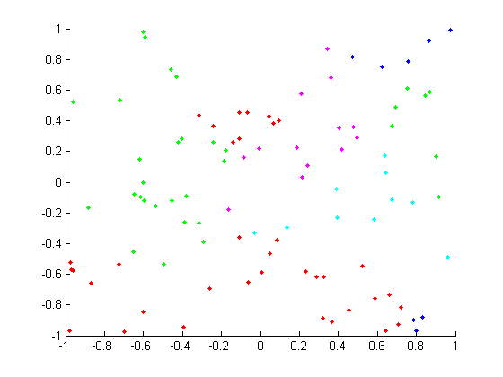
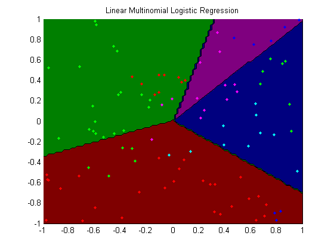
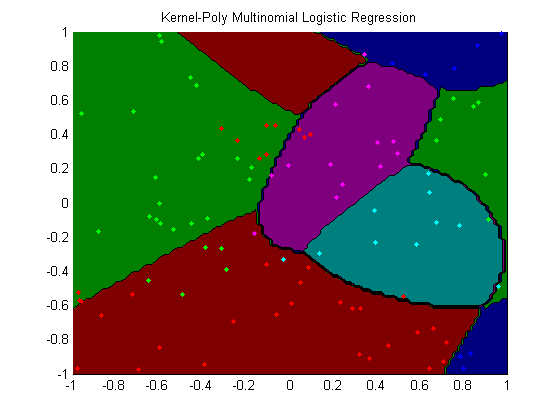
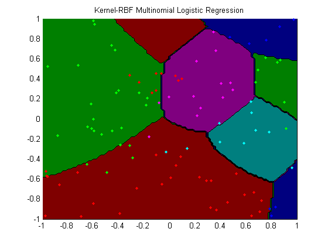

options.Display = 'none';
rand('state',0); randn('state', 0);
nClasses = 5;
nInstances = 100;
nVars = 2;
[X,y] = makeData('multinomialNonlinear',nInstances,nVars,nClasses);
figure;
[n,p] = size(X);
colors = getColorsRGB;
hold on
for c = 1:nClasses
if p == 3
plot(X(y==c,2),X(y==c,3),'.','color',colors(c,:));
else
plot(X(y==c,1),X(y==c,2),'.','color',colors(c,:));
end
end
lambda = 1e-2;
funObj = @(w)SoftmaxLoss2(w,X,y,nClasses);
fprintf('Training linear multinomial logistic regression model...\n');
wLinear = minFunc(@penalizedL2,zeros(nVars*(nClasses-1),1),options,funObj,lambda);
wLinear = reshape(wLinear,[nVars nClasses-1]);
wLinear = [wLinear zeros(nVars,1)];
polyOrder = 2;
Kpoly = kernelPoly(X,X,polyOrder);
funObj = @(u)SoftmaxLoss2(u,Kpoly,y,nClasses);
fprintf('Training kernel(poly) multinomial logistic regression model...\n');
uPoly = minFunc(@penalizedL2,randn(nInstances*(nClasses-1),1),options,funObj,lambda);
uPoly = reshape(uPoly,[nInstances nClasses-1]);
uPoly = [uPoly zeros(nInstances,1)];
rbfScale = 1;
Krbf = kernelRBF(X,X,rbfScale);
funObj = @(u)SoftmaxLoss2(u,Krbf,y,nClasses);
fprintf('Training kernel(rbf) multinomial logistic regression model...\n');
uRBF = minFunc(@penalizedL2,randn(nInstances*(nClasses-1),1),options,funObj,lambda);
uRBF = reshape(uRBF,[nInstances nClasses-1]);
uRBF = [uRBF zeros(nInstances,1)];
addOnes = false;
modelRBF = logregFitL2(Krbf, y, lambda, addOnes);
wRBF = modelRBF.w;
assert(approxeq(wRBF, uRBF, 1e-1))
[junk yhat] = max(X*wLinear,[],2);
trainErr_linear = sum(y~=yhat)/length(y)
[junk yhat] = max(Kpoly*uPoly,[],2);
trainErr_poly = sum(y~=yhat)/length(y)
[junk yhat] = max(Krbf*uRBF,[],2);
trainErr_rbf = sum(y~=yhat)/length(y)
[yhat2, prob] = logregPredict(modelRBF, Krbf);
assert(isequal(yhat, yhat2))
figure;
plotClassifier(X,y,wLinear,'Linear Multinomial Logistic Regression');
figure;
plotClassifier(X,y,uPoly,'Kernel-Poly Multinomial Logistic Regression',@kernelPoly,polyOrder);
figure;
plotClassifier(X,y,uRBF,'Kernel-RBF Multinomial Logistic Regression',@kernelRBF,rbfScale);
Training linear multinomial logistic regression model...
Training kernel(poly) multinomial logistic regression model...
Training kernel(rbf) multinomial logistic regression model...
trainErr_linear =
0.4900
trainErr_poly =
0.2300
trainErr_rbf =
0.2300
   